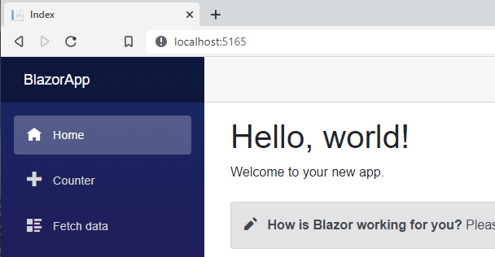
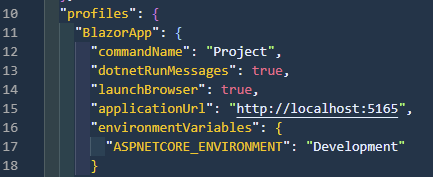
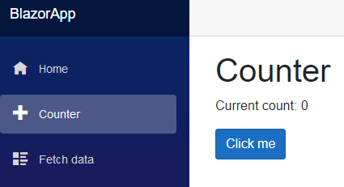

I started working with Playwright by accident. YouTube has shown me a recommendation - a short film by Nick Chapsas (yt | t) about testing user interfaces with SpecFlow and Playwright. While I admire the SpecFlow, BDD and Gherkin ideas - I still haven’t convinced myself to use them. But Playwright + C# have drawn my attention. Then I found a webinar recording with Andrey Lushnikov, and I was sold on Playwright.
The tutorials and blog posts about Playwright I’ve found focus on installing it, running code generator, and when it comes to testing - copy/paste the generated code, decorate it with [Test] attributes - and that’s it. Of course, it’s not that simplified, but overall that’s my impression. Most information I found and used is by reading the official documentation and the Playwright’s source code. This blog post is for anyone who wants to start writing clean tests using Playwright.
Preparations
As we use Blazor in one of the applications I’m working with, I will use an example Blazor project to build end-to-end tests. You can develop your first Blazor app in minutes, and that’s what I want for a start. For future reference: I used VSCode 1.62.2 for development, .NET 6.0.100. (SDK), and Playwright 1.16.2.
So first - run the following commands in the shell of your choice (I use pwsh):
dotnet new blazorserver -o BlazorApp --no-https
cd BlazorApp
dotnet new gitignore
dotnet watch
This should start the browser, and you should see a default Blazor app:

dotnet new blazorserver -o BlazorApp --no-https creates a new application in the BlazorApp folder (-o) and disables HTTPS (--no-https), as I don’t need it in this example. dotnet new gitignore adds a default .gitignore file for .NET. dotnet watch restores dependencies, builds the project and waits for the code changes, to immediately reload the browser. The hot reload is not required - I could use just dotnet run, but I copied the earlier tutorial commands. Also - dotnet run does not run the browser, and you have to do it manually. And to run it manually, you have to know the exact address. You will find it in the <BlazorAppFolder>/Properties/launchSettings.json file in the properties section.

Next - I will create a test project and install Playwright.
cd ..
dotnet new nunit -n BlazorApp.Tests
cd BlazorApp.Tests
dotnet tool install --global Microsoft.Playwright.CLI
dotnet add package Microsoft.Playwright.NUnit
dotnet new gitignore
dotnet build
playwright install
Step by step:
- I go out of the
BlazorAppdirectory, as I want my tests to be at the same level as my application - I create a new project using NUnit template
- I want to configure the project, so I go into the directory
- I install
Playwrightglobally - I install the Playwright test adapter for NUnit
- I add the default .gitignore file
- I build the project (you will get the message Please make sure Playwright is installed and built prior to using Playwright tool if you don’t build the project first)
- I install the Playwright library and browsers (it can take some time)
Now I can write the first UI test for Blazor.
Writing first test - step by step
The BlazorApp.Tests contains the sample UnitTest1.cs file. I skip it for now, and I add my own empty file to start from scratch using command code MainPageTests.cs (in BlazorApp.Tests folder).
As I use .NET 6, I will start with declaring the namespace (see: https://docs.microsoft.com/en-us/dotnet/csharp/whats-new/csharp-10#file-scoped-namespace-declaration and https://docs.microsoft.com/en-us/dotnet/csharp/language-reference/keywords/namespace), and the test class:
namespace BlazorApp.Tests;
class MainPageTests : PageTest
{
}
Pay attention to : PageTest - it’s not just a signal we are building on the Playwright library. We also get all the required setup - under the covers, Playwright spins up a new browser and opens an empty page, so we can already start testing the web pages. It means - you don’t need to write the following code to wire everything up.
using var playwright = await Playwright.CreateAsync();
await using var browser = await playwright.Chromium.LaunchAsync();
var page = await browser.NewPageAsync();
You can write this code, but why bother?
Side note: the Playwright’s object hierarchy is Playwright > Browser > Context > Page. You can inherit from all the hierarchy, but for the beginning, it’s good enough to just always start with a new empty browser page. To read more - take a look at the base NUnit classes documentation.
To make the compiler aware of what the PageTest is, I add the using directive:
using Microsoft.Playwright.NUnit;
namespace BlazorApp.Tests;
class MainPageTests : PageTest
{
}
When writing the Playwright tests - all test methods must be of type public async Task. It implies that we use the System.Threading.Tasks namespace, so I add it to the using section and write my first test skeleton:
using Microsoft.Playwright.NUnit;
using System.Threading.Tasks;
namespace BlazorApp.Tests;
class MainPageTests : PageTest
{
public async Task CounterStartsWithZero()
{
}
}
I want to check whether the counter on the /counter page has an initial value of zero. When you visit the /counter page, you see it has, but we are writing the test to be sure.

The test will contain three elements:
- call the
/counterpage - search for the counter value (to make things simple find the
<p/>element, as it’s the only paragraph on the page) - assertion for the value
As the first test should always fail, I will check whether the counter value equals 42:
using Microsoft.Playwright.NUnit;
using System.Threading.Tasks;
namespace BlazorApp.Tests;
class MainPageTests : PageTest
{
public async Task CounterStartsWithZero()
{
// call to the `/counter` page
await Page.GotoAsync("http://localhost:5165/counter");
// search for the counter value
var content = await Page.TextContentAsync("p");
// assertion for the value
Assert.Equals("Current count: 42", content);
}
}
Last two things: Assert is a part of the NUnit library, so I need to add a namespace for it (or use the full name with the namespace, but I don’t want to). Also - NUnit does not know that my method is a test, so I need to decorate it with the [Test] attribute:
using Microsoft.Playwright.NUnit;
using NUnit.Framework;
using System.Threading.Tasks;
namespace BlazorApp.Tests;
class MainPageTests : PageTest
{
[Test]
public async Task CounterStartsWithZero()
{
// call to the `/counter` page
await Page.GotoAsync("http://localhost:5165/counter");
// search for the counter value
var content = await Page.TextContentAsync("p");
// assertion for the value
Assert.AreEqual("Current count: 42", content);
}
}
Running the tests
To run all the tests, use the dotnet test command. You should get an error:
Expected string length 17 but was 16. Strings differ at index 15.
Expected: "Current count: 42"
But was: "Current count: 0"
--------------------------^
That’s great - the test was supposed to fail, so to fix it, change the assertion. The full MainPageTests.cs file should look following:
using Microsoft.Playwright.NUnit;
using NUnit.Framework;
using System.Threading.Tasks;
namespace BlazorApp.Tests;
class MainPageTests : PageTest
{
[Test]
public async Task CounterStartsWithZero()
{
// call to the `/counter` page
await Page.GotoAsync("http://localhost:5165/counter");
// search for the counter value
var content = await Page.TextContentAsync("p");
// assertion for the value
Assert.AreEqual("Current count: 0", content);
}
}
Congratulations. Your first Playwright test passed.
Things to remember and pay attention to
- Always use
awaitwhen calling the Playwright methods (e.g.await Page.GotoAsync("http://localhost:5165/counter");) - If the test class inherits from the PageTest - you have a
Pageobject ready for the service (the first letter is capital P) - Be careful - many tutorials build on the unnecessary browser initiation and use the
pageobject (all small letters) - you will get errors if you just copy/paste parts of their code
Have fun!